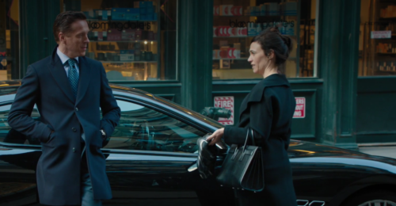

01
健身房外 / 新车旁
他觉得恢复了，她提醒别人未必准备好

剧情事实阿克斯找到刚离开健身房的温迪，送她一辆车作为会谈谢礼，并说明奖金仍按工作贡献计算。他说那晚之后觉得自己可以开始筹资；温迪看见他恢复状态，也提醒他，潜在投资者未必已经准备好。[1][2]
这一场为什么重要 · 个人解读
一场有效会谈可以让来访者更能行动，不能让外部世界同步改变。礼物是真实谢意，也把职业帮助转换成财富回报；她在接受时仍给出一个不迎合老板的判断。很快，筹资场景就会证明，自我感觉重新对齐，并不等于他人愿意承担同样的风险。
因此 → 阿克斯开始重返市场，旧声誉问题仍在等待他。